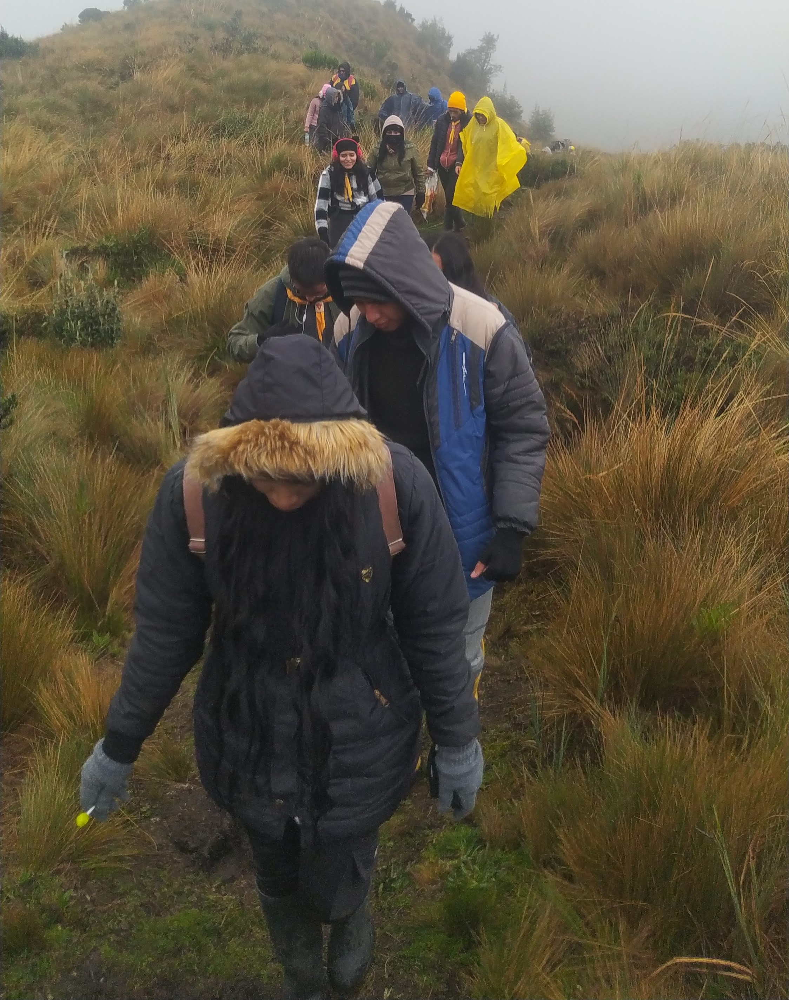
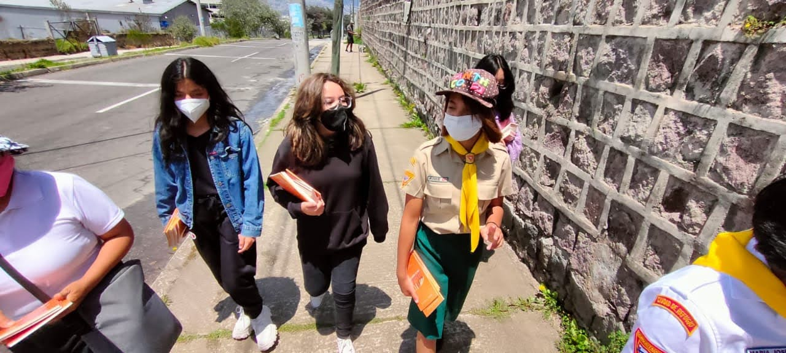
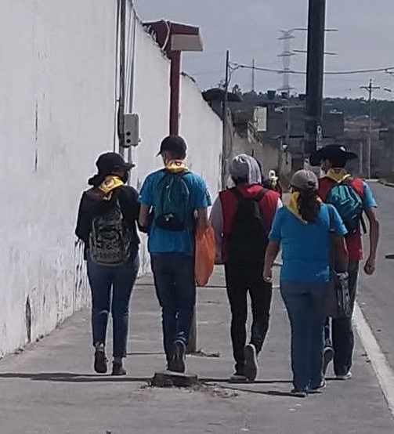
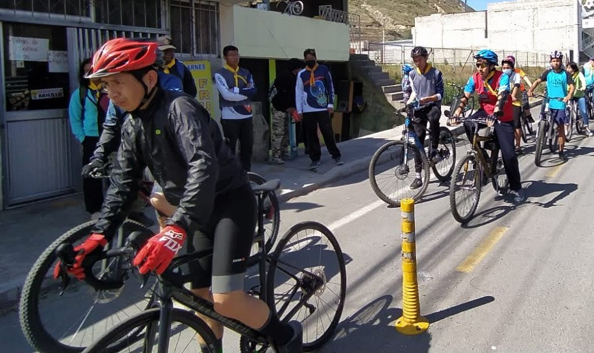
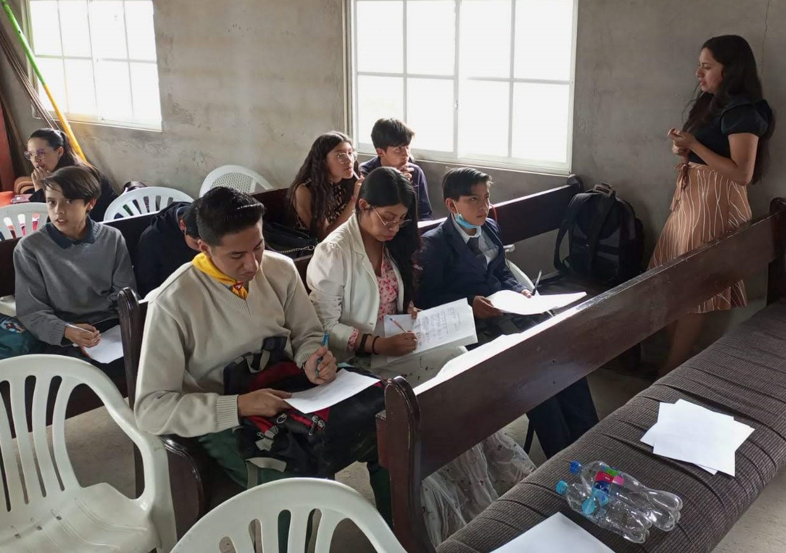

CLUB DE CONQUISTADORES
CLUB DE CONQUISTADORES Historia
El Club de Conquistadores es una organización para jóvenes adventistas que buscan desarrollar habilidades y valores a través de la aventura y el servicio comunitario. Fue fundado en el año 1950 y hoy en día cuenta con miles de miembros en todo el mundo.
En el club, los jóvenes aprenden sobre liderazgo, trabajo en equipo, supervivencia al aire libre, y cuidado del medio ambiente. También tienen la oportunidad de participar en actividades como caminatas, campamentos, y proyectos de servicio comunitario.
Ideales del Club de Conquistadores
- Voto Por la gracia de Dios seré puro, bondadoso y leal, guardaré la ley del conquistador y seré amigo de todos.
- Ley La ley del conquistador me oredena:
- Blanco El mensaje del advenimiento a todo el mundo en mi generación.
- Lema El amor de Cristo me motiva.
- Propósito Los jóvenes por los jóvenes, los jóvenes por la iglesia, los jóvenes por sus semejantes.
- Objetivo Salcvar del pecado y guiar en el servicio.
- Fidelidad a la Biblia Prometo fidelidad a la Biblia, a su mensaje de un Salvador curcificado, resucitado y pronto a venir, dador de vida y libertad a todos los que creen en Él.
Observar la devoción matutina.
Cumplir fielmente con la parte que me corresponde.
Cuidar mi cuerpo
Tener una conciencia limpia.
Ser cortes y obediente
Andar con reverencia en la casa de Dios
Conservar una canción en el corazón
Ir donde Dios me mande.
Actividades
En el Club de Conquistadores y se desarrolla una amplia variedad de actividades para sus miembros. Algunas de ellas incluyen:
- Caminatas   
- Acampar
- Excursiones
- Proyectos de servicio comunitario
- Actividades deportivas 
- Talleres de habilidades y valores 


Miembros
El Club de Conquistadores está abierto a jóvenes de entre 10 y 16 años que deseen desarrollar sus habilidades y valores a través de la aventura y el servicio comunitario. Los miembros del club se dividen en distintas categorías según su edad:
- Conquistadores (10-15 años)
- Aspirantes a Guías Mayores y Guías Mayores (16 años en adelante)
Los miembros del club se reúnen regularmente para participar en actividades y talleres, y también tienen la oportunidad de asistir a eventos regionales y nacionales.


Contacto
Si estás interesado en unirte al Club de Conquistadores o tienes alguna pregunta, no dudes en ponerte en contacto con nosotros:
- Teléfono: 0983581288
- Email: conquistadores@adventistas.org
- Dirección: Calle 123, Ciudad Adventista